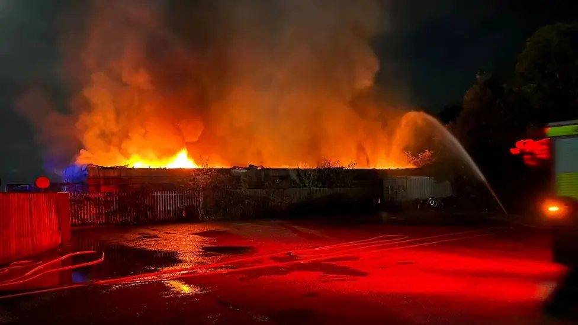

Thatcham
Residents raise health concerns after Colthrop battery fire
People living near Colthrop Business Park in Thatcham have raised concerns about possible health effects after a large battery fire. Those concerns have not been verified.

More than 150 tonnes of batteries caught fire at the Waste Care recycling site on Colthrop Business Park on the evening of Monday 28 September.
The fire was reported at about 7.38pm. Explosions were heard during the evening and into the early hours of Tuesday.
Royal Berkshire Fire and Rescue Service sent crews from eight of its stations, supported by neighbouring fire services. Firefighters were at the site for about 25 hours and went back twice to inspect it again, before handing it over to the site’s management and the Environment Agency.
While the fire was burning, the fire service advised people to avoid the area, keep windows closed and stay indoors where possible.
The railway between Newbury and Reading runs beside the site and was closed overnight, with an exclusion zone in place around the fire. Trains were running normally again on Tuesday morning.
West Berkshire Council said schools would stay open but should avoid outdoor activities where possible. No serious injuries have been reported, and the cause of the fire has not been made public.
Health concerns
Since the fire, some residents have said they are worried about what was in the smoke, including whether fruit and vegetables grown in nearby gardens are safe to eat. Some have also criticised the way warnings were communicated.
These health concerns have not been verified. West Berkshire Voice is not aware of any published air quality results or official assessment of a risk to health from the fire.